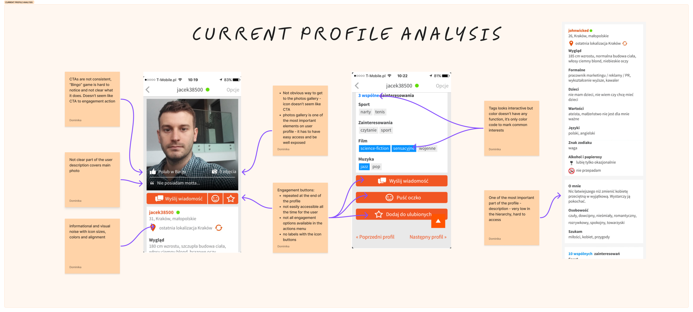
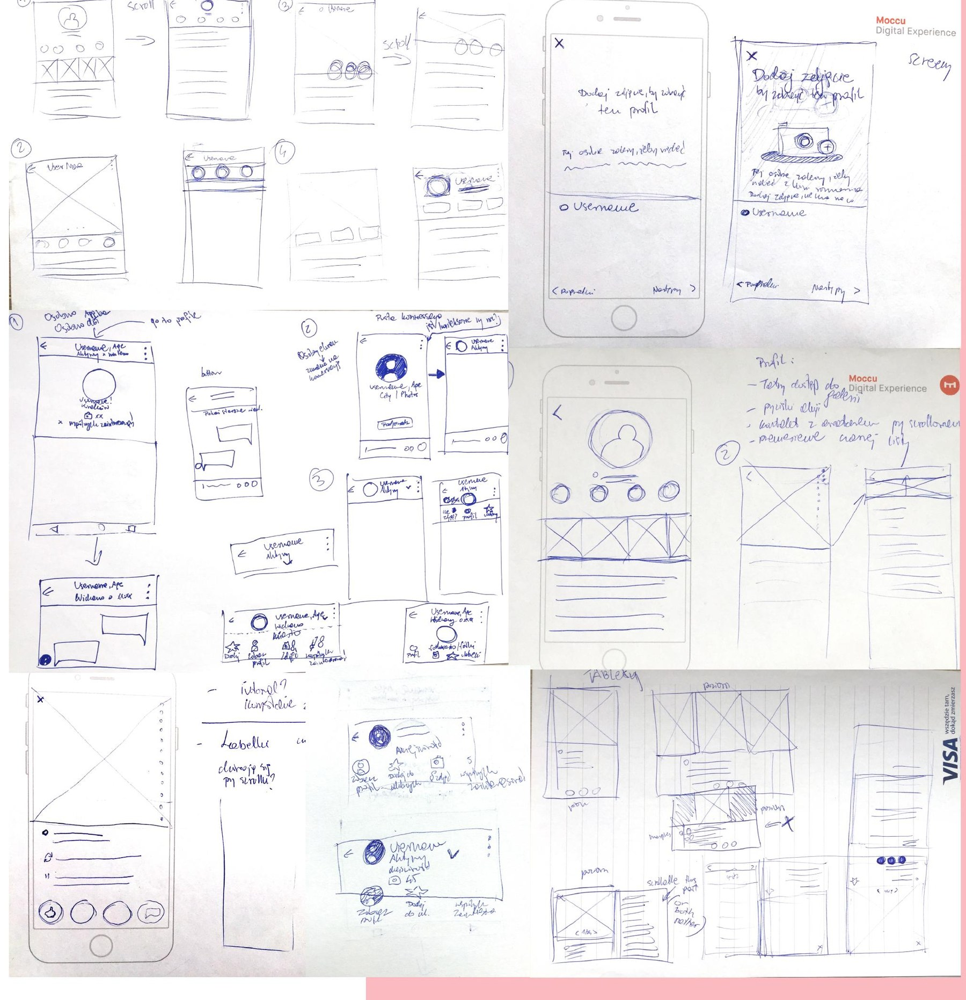
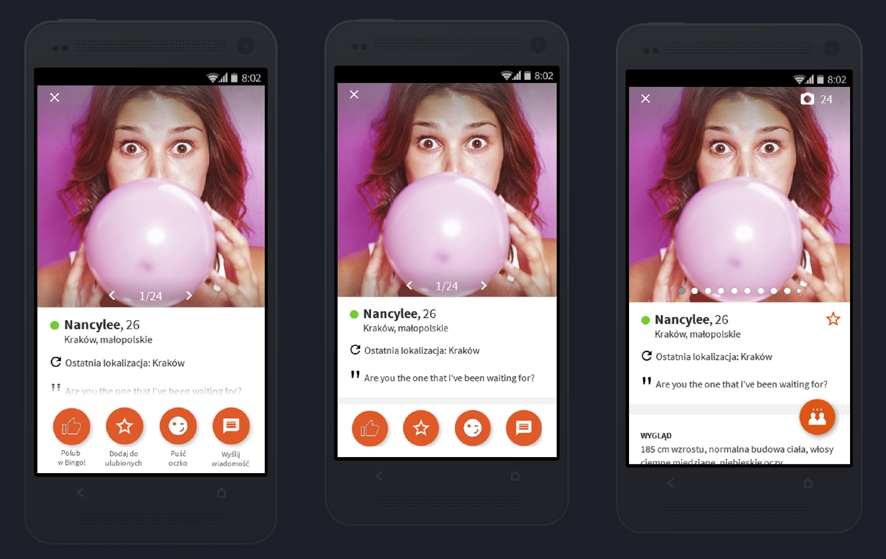
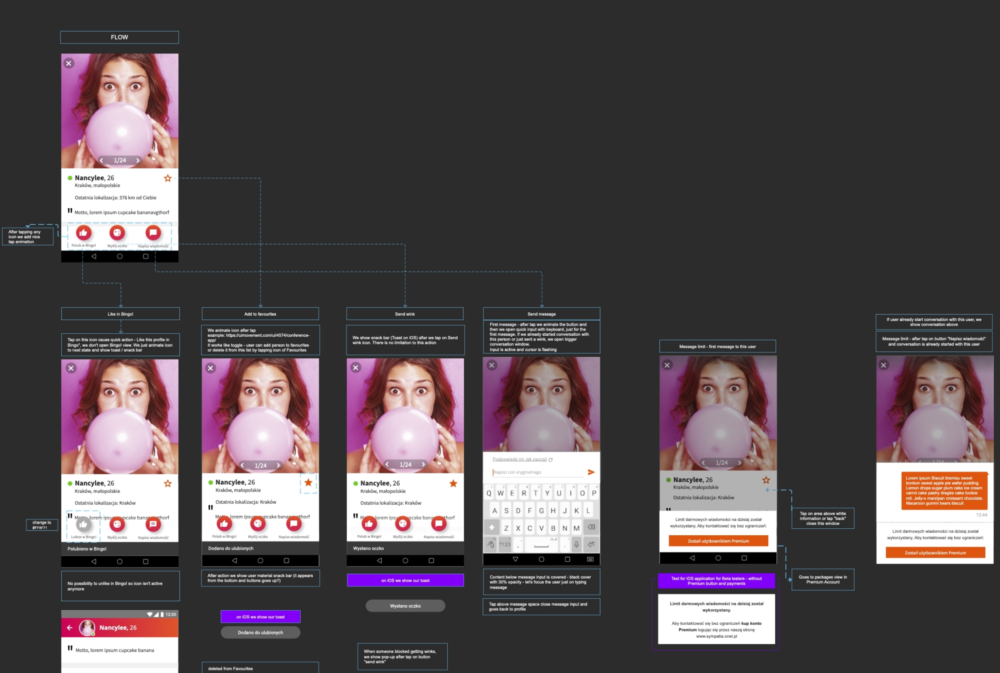
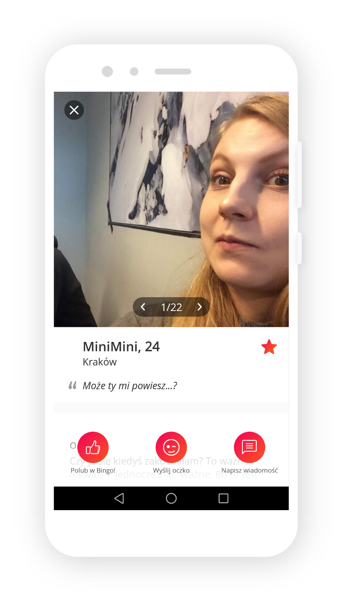
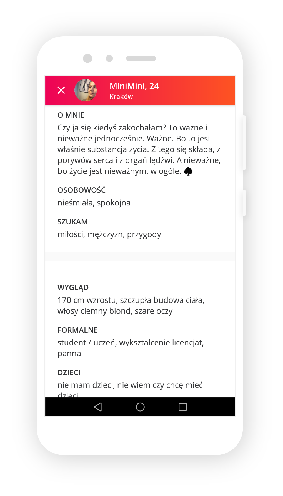
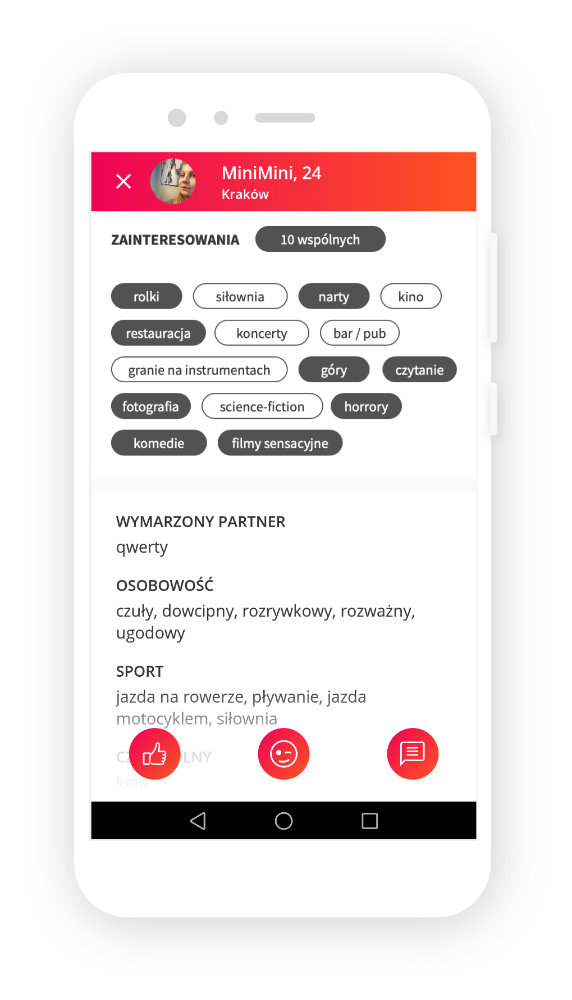

A full module redesign built on guerrilla usability testing to increase interactions between users.
Sympatia is the biggest dating service in Poland, available as a website, mobile web, and native apps for Android and iOS, with millions of registered users. After releasing the new navigation and MVP (see the navigation redesign case study), the team turned to the most important module in any dating app: the user profile.
Here, the profile is where people form their first impression of someone and decide whether to start a conversation. The goal wasn't just a visual refresh, it was making sure the profile actually helped people browse photos easily and reach out without friction.

Current user profile analysis
Alongside competitive analysis and behavioral data from Google Analytics, I also referenced a broader round of user interviews I ran with a second UX designer across the wider Sympatia user base, exploring general user motivations and behavior. It wasn't focused on the profile specifically, but one part of it turned out to be especially useful here: what people actually look for when viewing someone's profile.
A few findings stood out. Photos were consistently the top factor, people judge whether someone is visually "their type" before anything else, and having several photos to browse was seen as a clear plus. The description came a close second, people read it closely and often referenced it in their first message. Interests came third. That was a strong signal the profile itself, not just the messaging screen, was doing a lot of the work in getting a conversation started.
Before this redesign, the profile had real friction points. Access to a user's photo gallery wasn't intuitive and was a bit hidden, with no easy way to actually browse through someone's photos. The interaction buttons, for messaging, winking, and other actions, weren't sticky, so scrolling past them made it harder to reach out to someone. Even the description, which our research showed was the second most important thing on a profile after photos, was tucked away and easy to miss.
I translated those pain points into a few early sketches, then built wireframes and prototypes to test the assumptions rather than take them on faith.

Early sketches, working through the assumptions before building anything higher-fidelity.
I ran two rounds of guerrilla usability testing, tweaking my approach based on what I learned each time, with 10 participants in the first round and 5 in the second. These weren't big, formal studies, just quick guerrilla tests, a fast and cheap method for surfacing the biggest UX issues in a design. The participants weren't real Sympatia users, just people I could reach quickly around the office and out on the street, while staying within our core user age range.

Three navigation variants tested with users during the guerrilla sessions.
I tested different navigation approaches, gallery access, and placement of the engagement buttons. For navigation, one approach came out clearly ahead while another confused participants, so the direction was obvious. The shared interests section was the one thing people consistently struggled with, and it needed a proper rework. With that clear feedback, I moved forward with the direction, working closely with our graphic designer and developers to turn what we'd learned into a released, improved version.

A fragment of the user flow for the profile's action buttons.
The redesign directly answered the friction points we'd uncovered. Where the old profile made it hard to access and browse someone's photo gallery, the new one puts photos directly on the profile, quick and easy to browse. Where the action buttons used to disappear as soon as you scrolled, they now stay sticky, always visible at the bottom of the screen, so reaching out to someone is never more than a tap away. I also restructured the whole information hierarchy on the profile, and since we knew the description was one of the most important parts, it moved much higher up, making it more visible and easier to discover.



The redesigned profile
After launch, the numbers moved exactly where the redesign intended.
The decrease in favorites wasn't a miss, it was expected. Testing had already shown people barely registered the favorites star even without a label, so shrinking it to make room for more important engagement actions was a conscious trade-off, and the data confirmed it worked.